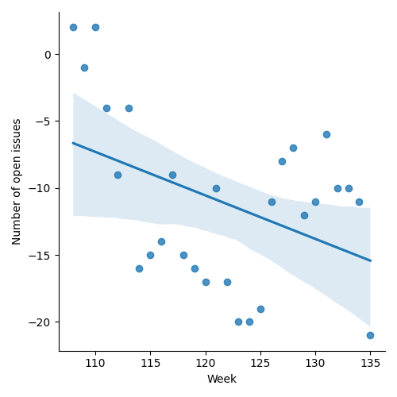
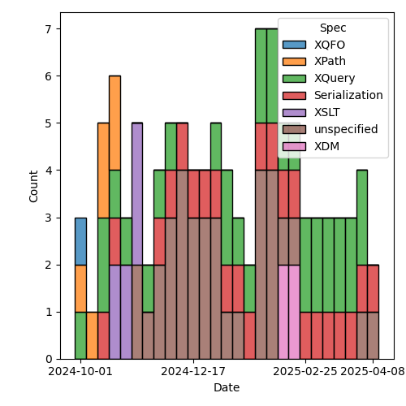
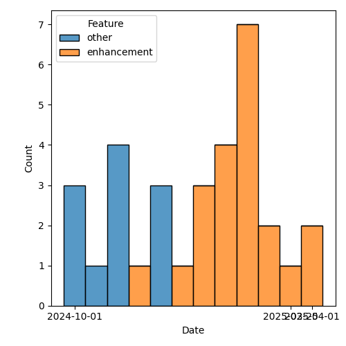

QT4 CG Meeting 117 Minutes 2025-04-15
Meeting index / QT4CG.org / Dashboard / GH Issues / GH Pull Requests
Table of Contents
Draft Minutes
Summary of new and continuing actions [3/12]
[ ]QT4CG-082-02: DN to work with NW to come to agreement on the fn:ranks proposal[ ]QT4CG-107-05: JLO and DN to consider a proposal for system defined records.[ ]QT4CG-112-01: JLO to propose a concrete example that uses “.” in a ~%method~s.[ ]QT4CG-113-02: NW to investigate a way to show extra attributes in the syntax summary.[ ]QT4CG-115-02: JWL to write a few tests for xsl:record[ ]QT4CG-116-01: Add a specific error code for unsupported options on doc and doc-available[ ]QT4CG-116-03: NW to review the star/plus/delta symbols in the ToC. (See 1838)[ ]QT4CG-117-01: MK to add errors for invalid plans.[ ]QT4CG-117-02: MK to rename ‘fallback’ to ‘default’, then merge the PR.
1. Administrivia
1.1. Roll call [12/13]
Regrets: BTW
[X]David J Birnbaum (DB)[X]Reece Dunn (RD)[X]Sasha Firsov (SF)[X]Christian Grün (CG)[X]Joel Kalvesmaki (JK) [x:10-][X]Michael Kay (MK)[X]Juri Leino (JLO)[X]John Lumley (JWL) Scribe.[X]Dimitre Novatchev (DN)[X]Wendell Piez (WP)[X]Ed Porter (EP)[ ]Bethan Tovey-Walsh (BTW)[X]Norm Tovey-Walsh (NW).
1.2. Accept the agenda
Proposal: Accept the agenda.
Accepted.
1.2.1. Status so far…
These charts have been adjusted so they reflect the preceding six months of work.

Figure 1: “Burn down” chart on open issues

Figure 2: Open issues by specification

Figure 3: Open issues by type
1.3. Approve minutes of the previous meeting
Proposal: Accept the minutes of the previous meeting.
Accepted.
1.4. Next meeting
The next meeting is scheduled for 22 April 2025.
No regrets heard.
1.5. Review of open action items [3/10]
(Items marked [X] are believed to have been closed via email before this agenda was posted.)
[ ]QT4CG-082-02: DN to work with NW to come to agreement on the fn:ranks proposal[ ]QT4CG-107-05: JLO and DN to consider a proposal for system defined records.[ ]QT4CG-112-01: JLO to propose a concrete example that uses “.” in a ~%method~s.[ ]QT4CG-113-02: NW to investigate a way to show extra attributes in the syntax summary.[X]QT4CG-115-01: MK to give an example of params passed automatically through next-match using a 3.0 version control[ ]QT4CG-115-02: JWL to write a few tests for xsl:record- Making some progress, will chat with NDW about how to load the tests
[ ]QT4CG-116-01: Add a specific error code for unsupported options on doc and doc-available[X]QT4CG-116-02: MK to improve the description of the results of validation[ ]QT4CG-116-03: NW to review the star/plus/delta symbols in the ToC. (See 1838)[X]QT4CG-116-04: MK to correct the missing “or $Y” infn:function-identity().
1.6. Review of open pull requests and issues
This section summarizes all of the issues and pull requests that need to be resolved before we can finish. See Technical Agenda below for the focus of this meeting.
1.6.1. Merge without discussion
The following PRs are editorial, small, or otherwise appeared to be uncontroversial when the agenda was prepared. The chairs propose that these can be merged without discussion. If you think discussion is necessary, please say so.
- PR #1919: 1905 Editorial edits
- PR #1932: QT4-CG-115-01 xsl:next-match examples
- PR #1930: QT4-CG-116-04 correction to fn:function-identity
- PR #1924: 1923 Editorial adjustments for arithmetic expressions
Proposal: merge these PRs without discussion
Accepted.
1.6.2. Close without action
It has been proposed that the following issues be closed without action. If you think discussion is necessary, please say so.
- Issue #1780: xsl:for-each optional variable introduction
- Issue #1754: Inverse functions to bin:hex, bin:bin, and bin:octal
- Issue #1566: EXPath Modules: Future
- Issue #826: Arrays: Representation of single members of an array
- Issue #269: Function for URI relativization
Issue #37: Support sequence, array, and map destructuring declarations
DN asks about the status of #37.
- CG: I proposed to close it. I’m in favor of the feature, but we have records and other things that make it less necessary.
- DN: I’d like to see it again. It’s a very nice feature and sometimes gives very good optimization possibilities.
Proposal: close these issues without further action, except for #37.
Accepted.
1.6.3. Substantive PRs
The following substantive PRs were open when this agenda was prepared.
- PR #1931: QT4-CG-116-02 improve description of validation
- PR #1929: 1725 xsl:mode/@copy-namespaces
- PR #1928: 1844b Arrow Expressions
- PR #1926: 1907 method lookup (disallow wildcard selection)
- PR #1922: 1921 Expand definition of version ranges in XSLT
- PR #1918: 1891 clarifications on HTML versions and errors
- PR #1916: 1896 Drop parameter names as a property of function items
- PR #1906: 1797 elements-to-maps-conversion-plan function
- PR #1901: 1363 fallback becomes a value not a function
- PR #1894: Additional examples to fn:chain - in a new branch
- PR #1883: 882 Replace fn:chain by fn:compose
- PR #1587: 557 Add fn:binary-resource
2. Technical agenda
2.1. Review of pull requests
Let’s time-box the discussion of elements-to-maps to 30 minutes and see if we can close a few smaller PRs after that.
2.1.1. PR #1906: 1797 elements-to-maps-conversion-plan function
See PR #1906
Time boxed to 30 minutes, MK introduces the issue. This is a reworking of the elements-to-maps function taking account of comments and suggestions as well as my own experience using it.
- MK: The main feedback I got from trying to use it was that it isn’t enough to
analyze a set of documents and come up with a plan. You want to be able to
adapt to new documents that arrive tomorrow and the next day.
- … This new proposal separates formulating the plan from using the plan.
- … You can save the plan as JSON to reuse it later.
- MK: The function is now
fn:element-to-mapnotfn:elements-to-map. It only needs to handle one.- … Lots of small details have changed, but mostly in service of describing the new architecture.
- … The fallback action has changed: if you use a plan that can’t handle
attributes, then they get discarded.
- … In all other cases, if you choose an unsuitable plan, it simply serializes as XML.
- … One of the comments was to provide a fallback action in the plan. That might still be a good idea. Although only “mixed” and “xml” make sense, probably.
- MK: New section 18.5.2 on how to create a conversion plan.
- …
fn:element-to-map-conversion-plananalyzes documents and produces a plan. - … The rules for how it works are prescriptive and basically the same as what used to be uniform layout.
- … The function doesn’t consider any schema; if you want a schema-aware plan, you do it at the instance level, you don’t need a specific plan.
- … There is now more analysis to decide if booleans, numbers, or strings should be used.
- …
- MK: The actual structure of the actual plan is a bit informal; it would be
nice to tighten that up.
- … If you use list layouts, there’s an attribute that tells you what the expected child is; this is so you can go to fallback if you find something else.
- MK: Schema-based conversion is essentially unchanged, but there are a bunch of editorial changes.
- MK: There are rules about how to select an element layout.
- MK: Rules for handling content now include more type information.
- MK: The section on things that are lost is largely unchanged.
- MK: Most of the examples don’t change.
- MK: The
fn:element-to-mapplan now has an option parameter. - JWL: You’re running an analysis over documents; is it possible to define that analysis completely in XPath/XQuery/XSLT?
- MK: Can we provide an implementation of that function? I guess the answer is almost certainly yes, but it’s not clear that we should put that in the spec.
- JWL: That’s as normative as you’re going to get.
- MK: There’s always a question mark about what happens if we get the code wrong. But it would certainly be an interesting exercise.
- JWL: Could the application of the plan on a tree also be written that way?
- MK: Yes, even more ambitiously!
- JLO: I like this new approach. Two questions: I am allowed to modify the plan before I get it?
- MK: Yes.
- JLO: What if I provide a map that’s invalid?
- MK: Yes, I think you’re right, we do need invalid plan errors.
ACTION QT4CG-117-01: MK to add errors for invalid plans.
- RD: For determining boolean or numeric types, do you assume 0/1 is boolean not numeric?
- MK: Yes, if every instance is castable as xs:boolean, then you use boolean, etc.
- DN: The name of the function is very confusing; we haven’t had any functions before that return a “plan”. The output is a record, but it’s very confusing. Next, the most pressing question is why is such a function necessary? Who is it intended for, and how can it be used by humans or other functions. If I’m the end user, I’d like to know how and when to use this function. I would prefer something other than “plan”. Maybe “suggestion” would be better.
- MK: The plan is prescriptive.
- RD: This is also similar to SQL plans.
- MK: There are two fucntions, the first creates a plan and the second uses the plan. It’s also human readable and human editable. You can modify it if you want. If you don’t want boolean attributes treated as boolean, if they’re all 0 and 1 you can treat them as numeric.
- DN: I think the function name should include “translation” not “conversion”.
Some discussion of the intended use case.
- MK: For example, you have a workload or task that regularly gets XML input and needs to convert it to JSON where you want control over the JSON but overall you want regularity so that the same rules are used every time. You probably have code that consumes that JSON. It’s optimized for a scenario where you’re doing regular conversions.
- DN: I can see this could be useful. For example, I have a document and I get plan and I use it or adjust it and use it. In a few days, I get the same type of document and I adjust the plan differently. Can I get any consistency?
- MK: That’s like editing your code.
- NW: Don’t do that!
- DN: You could also re-run all the inputs on the new plan.
- MK: One thing that occurs to me is that it might be useful to have a way to inject a date/time or other value that comes from the plan.
- WP: I like the approach. I spent five years working on this problem. I know there’s a constituency that needs it. I like the model, it allows intervention. Having some sort of timestamp/draconian/uuid would be excellent. I like the idea of explicating the spec with code, but we need tests for it.
- CG: I’ve given various comments and questions on the PR. I would like to have
those commented or discussed before we accep this.
- … We have two ways to use element-to-map, with or without an explicit map.
- … I think if we have an explicit map, we should always raise an error when the result doesn’t match the plan.
- CG: I think the boolean cast should try numeric first.
- MK: The reason for doing boolean first is that 0/1 are castable to boolean.
- CG: I think maybe “numeric” should be called “number”.
- CG: I wonder if we need “conversion” in the name.
- CG: I also think we could use node instead of document for input.
- CG: And there are some test cases where it isn’t clear what should be added or omitted.
- CG: I think the first observation is the most important.
- MK: It’s always difficult to come up with a guiding principle for whether the system should try to produce something or fail. Maybe that needs to be an option in the plan.
- CG: What’s the advantage of using the fallback?
- MK: If you’re handling a fairly loose format, like OTA that handles travel details, there are very likely uncommon attributes not of great interest, it’s inconvenient if you’ve handled thousands of documents before you encounter an element with a date.
- CG: I think ignoring attributes is fine, it’s the generic fallback to XML that I’m concerned about.
- NW: I think that failing if you provide a plan and then it doesn’t work makes sense.
- JWL: The function that generates a plan seems to be a development time feature, not a runtime feature. Do we have anything else like this?
- MK: No, I think it’s a fairly new idea. Clearly with iXML you’re reading a grammar that’s likely to be the same every time but we don’t provide a way to serialize it and reuse it.
- JWL: This feels like a different space. I’m not sure how to think about that to be honest. Why not do it in XSLT?
- WP: If you could get to the world to use a single schema, the problem would go away.
- RD: I think it’s useful to specify the fallback behavior, whether fallback XML or raise an error or ignore the missing elements. I can see use cases for at least those. This is also kind of similar to taking a set of XML documents and generating a schema automatically.
- MK: Yes, it’s very much like that.
- DN: I think that the conversion plan should only be performed by the owner of the document.
2.1.2. PR #1901: 1363 fallback becomes a value not a function
See PR #1901
- MK: We looked at this before, but the markup was a mess. Hopefully this will be easier to review.
MK reviews the proposal.
- DN: I think this is very good. But I think that now that we’re converting fallback from a function to a value, we should rename it default.
- MK: Yep.
ACTION QT4CG-117-02: MK to rename ‘fallback’ to ‘default’.
Proposal: Accept this PR, after renaming the parameter.
Accepted.
2.1.3. PR #1916: 1896 Drop parameter names as a property of function items
See PR #1916
- MK: Ever since 3.1, we’ve said that a parameter name is a property of a function item.
- … In some cases, we don’t say what the names are. We don’t use the parameter names and there are no functions that use them. This just gets rid of that dead wood. If you can’t find out what they are, there’s no point in having them.
Proposal: Accept this PR.
Accepted.
2.1.4. PR #1918: 1891 clarifications on HTML versions and errors
See PR #1918
- MK: This changes the
fn:parse-htmlfunction. Specifically, it changes the options. We drop the method and html-version options. The key thing is that we say an implementation “should” try to follow the living standard. “Do your best.”- … In practice, I don’t think any implementation is likely to have separate algorithms for different versions of HTML.
- NW: Hear, hear.
Proposal: Accept this PR.
Accepted.
3. Any other business
- JLO: Is there a plan to have an QT meeting at MarkupUK?
- NW: Not at the moment. Who’s going?
About 50% at a guess, mostly from the UK and Europe.
- NW: Juri, why don’t you send a message to the list with a proposal?
- JLO: Ok, I’ll do my best.